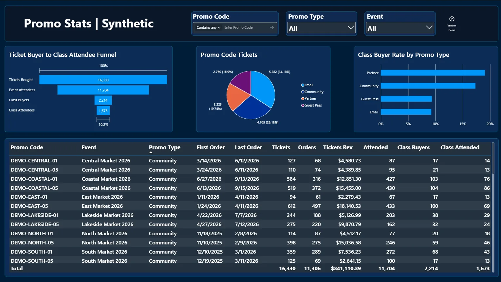
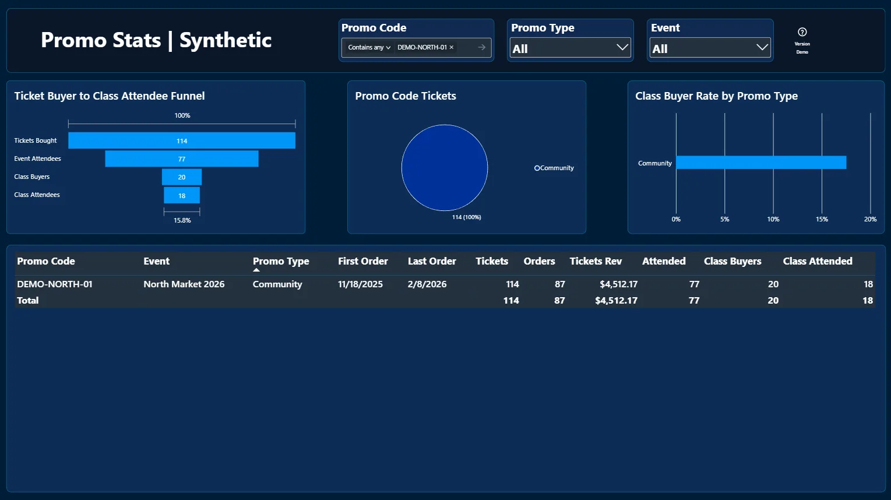

Promo Code Performance
Which promo codes turn ticket buyers into class buyers?
Leadership used promo codes to fill events and wanted to see what happened next: did those buyers attend, and did they go on to buy and attend a follow-up class?

What it shows
- Funnel: tickets bought → event attendees → class buyers → class attendees, with the overall conversion rate.
- Ticket mix: share of tickets by promo type (community, email, guest pass, partner).
- Class buyer rate by promo type: class buyers ÷ tickets, for comparing channels fairly regardless of volume.
- Code-level table: every promo code with order dates, tickets, orders, revenue and downstream results.
How it's built
- Text search slicer: type a code to filter the whole report to it, which is faster than scrolling a dropdown of dozens of codes.
- Dropdown filters for promo type and event, all driving the same visuals.
- Ratio measures from summed parts: SUM(buyers) ÷ SUM(tickets) rather than averaging row-level rates, so totals stay correct at any filter level.
- Descriptive, not causal: the funnel shows what buyers did after using a code. It doesn't claim the code caused the purchase.
